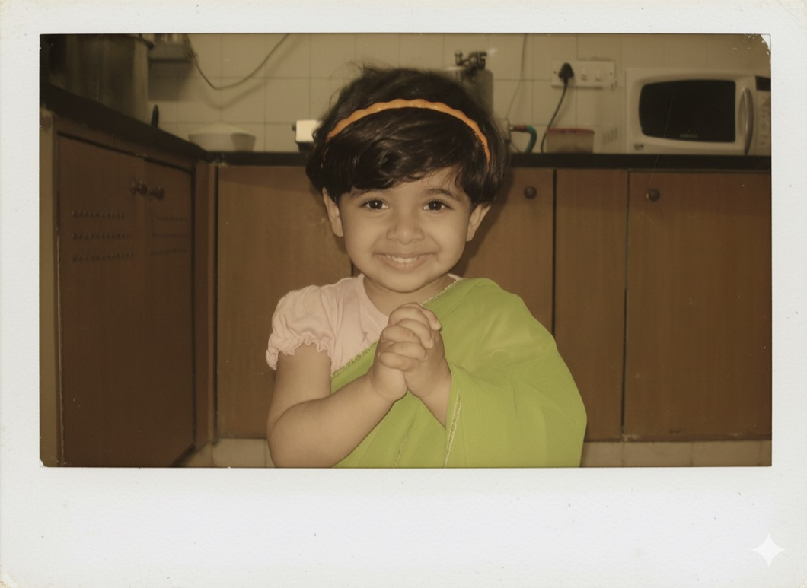
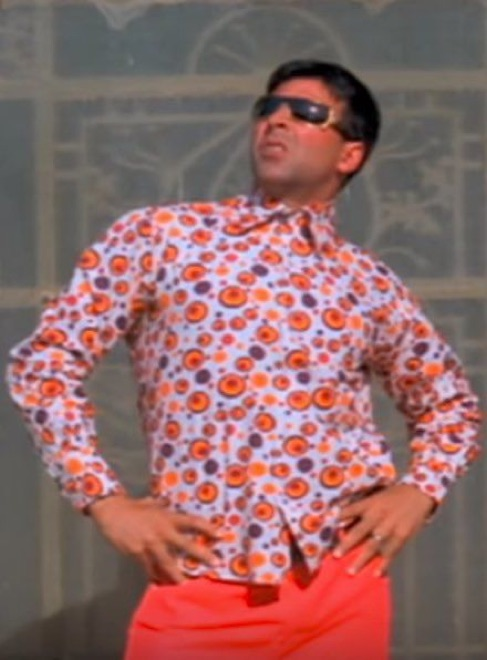
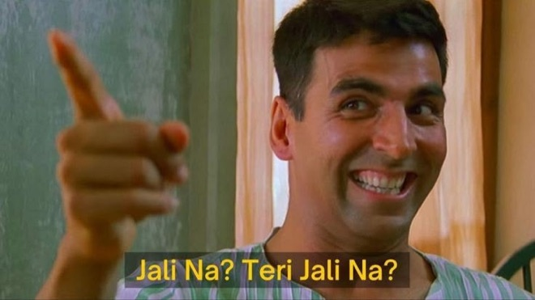
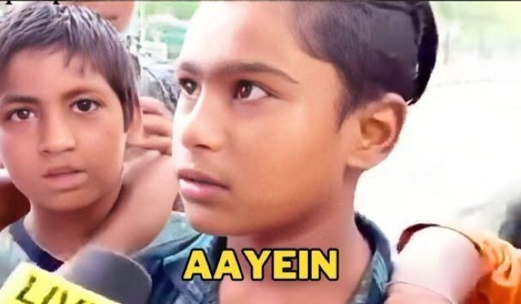
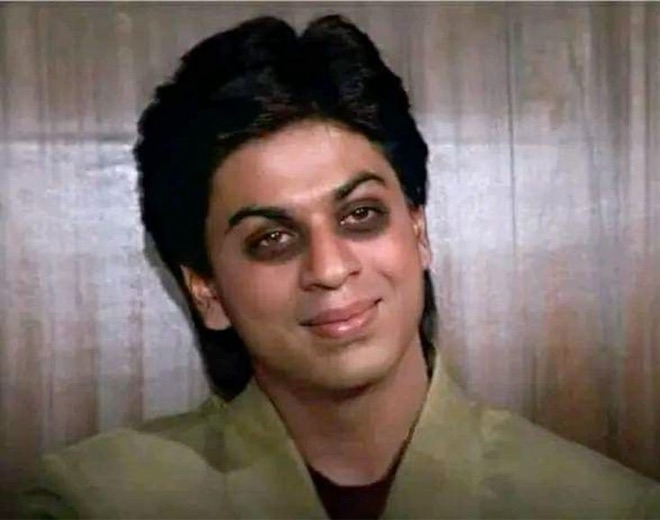

About me
Five folders. Open one.
Who am I? (pls tell me)

I’m Ishita. I like taking photos, collecting postcards, long auto rides and finding new music. I almost always have my AirPods in, eat an unreasonable amount of paneer, and somehow ended up with a rat as my mascot. I’m mostly just someone who likes making things and figuring things out as I go.
If my friends have ended up here, please feel free to add to this :)
The board
Notes you write stay in your browser — nobody else sees them, not even me.
Nothing on the board yet.

Why the rat?
I’ve been told I look a little like one. Instead of being offended, I gave it a job. It now lives here and occasionally does some design work.
The rat started as a random joke, but eventually became a little stand-in for me across the portfolio. It’s curious, slightly nosy, and tends to wander into places it probably shouldn’t — which is pretty close to how I approach design. I like poking around, asking questions, noticing tiny things and figuring out how things work.
So you’ll see it popping up throughout the site — sometimes explaining something, sometimes interacting with the page, and sometimes just existing because I thought the page needed a rat.


Music library
Five records that have been on far too often. Press play — whichever one is cued drops onto the deck and turns while it plays. About half a minute of each.
The clips aren’t on the server yet — the record still turns if you press play.
None of this music is mine. Short clips, shared because I love them; every one of these belongs to the artist who made it.
My favourite stickers
The ones that get sent the most. Drag them around if you like — where you leave them is remembered.




My postcard collection
Picked up in bookshops, airports and other people’s cities. Drag, scroll or use the arrows.